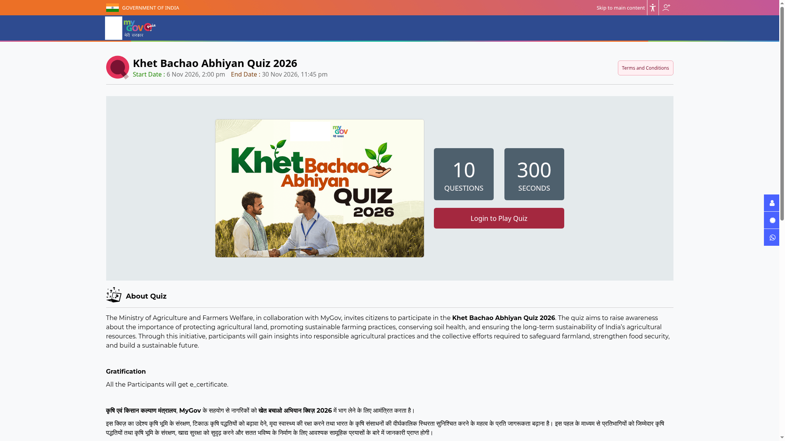

Khet Bachao quiz: 10 questions and an e-certificate
The Ministry of Agriculture and Farmers Welfare, with MyGov, offers a short Khet Bachao Abhiyan Quiz on farmland protection, soil health and sustainable farming. Answer up to 10 questions in 300 seconds. The official page promises an e-certificate to participants, not a cash prize. The displayed closing date is 30 November 2026 at 11:45 PM IST.
Who can take part
The quiz is open to Indian citizens. Employees of the Ministry of Agriculture and Farmers Welfare and MyGov are not eligible. The checked rules do not specify an age limit. This is a separate activity from the Khet Bachao poster competition; there is no poster or video to create for this quiz.
What to expect
- Maximum 10 questions in 300 seconds, which is five minutes.
- Topics include protecting agricultural land, sustainable farming, conserving soil health and food security.
- Only one entry per participant. Multiple participation, impersonation and other unfair means can invalidate an entry.
- Submitted entries cannot be withdrawn.
- The published reward is an e-certificate for participants. No cash award is announced on the checked page.
How to participate
- Open the official Khet Bachao quiz page. Check that the title says Quiz, not Poster Competition.
- Read the Terms and Conditions before signing in. Keep five uninterrupted minutes available and use a stable connection.
- Choose Login to Play Quiz and complete the MyGov sign-in process yourself.
- Start only when ready. The rules say the quiz begins as soon as you click Play Quiz.
- Answer and submit within the time limit. Follow the portal's certificate instructions after completion.
Do not start a timed attempt just to explore it. We did not sign in, start the quiz or verify the post-submission certificate screen. The public page promises a certificate but does not explain its exact download steps.

Before you begin
The organisers may change the terms or cancel the quiz. They do not accept responsibility for incomplete, delayed or lost entries caused by technical or network problems. Proof that you sent an entry is not proof they received it. Their decision is final, and disputes fall under Delhi courts. Read the current page again before your one attempt.
Video guide
We could not verify a reliable English or Malayalam video walkthrough for this specific 2026 quiz. Use the written steps and the official rules. Do not use answer-sharing videos or allow another person to take your attempt; the rules prohibit unfair means and impersonation.
What we verified
We read the public rules and inspected the live signed-out page, which showed Login to Play Quiz and the displayed 30 November deadline on 13 November. A text-only retrieval returned a conflicting Closed label, so we checked the actual live page rather than treating that extraction as the current availability. Recheck the page before trying; we have not verified signed-in access or completed a quiz.
Source: Ministry of Agriculture and Farmers Welfare / MyGov quiz page and terms, checked 13 November 2026. Explainer by AiCoN, not a government publication.